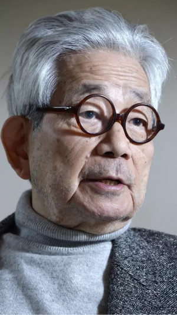
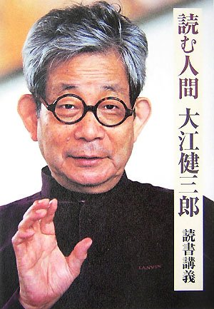

.Kenzaburō Ōe (大江 健三郎, Ōe Kenzaburō).
Sinh ra tại một làng miền núi trên đảo Sikoku, nhà văn Kenzaburo Oe (Sinh 1935) hiện là một trong những khuôn mặt nổi lên rạng rỡ trong văn học Nhật Bản hiện đại.
Ngay từ 1958, khi đang học ở Đại học Tokyo, cuốn tiểu thuyết đầu tiên của K.Oe mang tên Sự chăm sóc gia súc đã được tặng giải thưởng văn học lớn ở Nhật Bản: Giải Akutagawa Ryunosuke. Năm 1967, cuốn tiểu thuyết Bóng đá 1860 ra đời. Đây là câu chuyện xảy ra ở vùng quê của chính tác giả, ở đó, nhân vật chính, Takasi nhân danh nền văn hóa ngoại vi, chống lại sự áp đặt về mặt văn hóa của chính quyền trung ương. Thành tích mà Kenzaburo Oe gặt hái được qua cuốn sách thật lừng lẫy. Tác phẩm được tặng giải thưởng Tanizaki và trong vòng một năm, riêng ở Nhật Bản được in lại 11 lần. Từ 1972, Bóng đá 1860 đã được dịch ra tiếng Nga và 1985 lại được dịch ra tiếng Pháp. Theo báo Pháp Le Monde thì trong khi miêu tả một nhân vật thử tìm cách thích ứng với cái thế giới mà anh ta không chịu nổi, tác phẩm này của K.Oe mang trong mình nó hơi thở của cái “thế hệ vứt đi”, tức thế hệ thanh niên Nhật Bản trở về sau chiến tranh; đến nay, sau gần hai mươi năm ra đời, nó vẫn còn ý nghĩa.
Cơn hồng thủy đã đến ngực chúng ta
Khi được hỏi về quá trình sáng tác của mình, Kenzaburo Oe thường kể “Tôi học viết ở văn học Nga. Tolstoi và Dostoievsky đã dạy tôi nghệ thuật nhìn vào cuộc sống, đặc biệt là nghệ thuật đi sâu vào thế giới nội tâm của con người”. Một lần khác, nhà văn còn nói cụ thể rằng lúc trẻ, ông đã thử viết lại nhiều đoạn trong tác phẩm của Dostoievsky từ Anh em Karamazov đến Lũ người quỷ ám.
… Tất cả người điều đó được chứng thực rằng bằng chính các sáng tác của tác giả. Một mô típ xuyên suốt trong K.Oe là nỗi ám ảnh về những tai họa sắp tới. Nhân loại đang phải giáp mặt với những thảm họa - K.Oe khẳng định. Đó là thảm họa hạt nhân mà người Nhật Bản đã biết. Đó còn có thể là thảm họa về sự phá hoại sinh thái. Chỗ giống nhau của hai thảm họa này: Nó không phải từ ngoài vào, mà là hậu quả của những hành động xuẩn ngốc của chính con người. Một cuốn tiểu thuyết in ra 1973, có cái tên cụ thể Cơn hồng thủy đã đến ngực chúng ta. Isana, nhân vật chính trong tác phẩm, sau khi làm những việc tệ hại như cưỡng bức và giết hại trẻ em, cảm thấy kinh hoàng về cái xã hội trong đó thiện, ác không sao phân biệt rành rọt. Lòng Isana tràn đầy hối hận… Lời kêu gọi K.Oe trong trường hợp này: Con người phải tự nhận thức mình thật rõ là như thế nào. Họ phải tự thay đổi và góp phần đổi thế giới. Nếu không họ sẽ bị tiêu diệt. Với một cách nói pha giọng thiền, Kenzaburo Oe bảo:
– Tôi nghĩ rằng nếu con người chính tâm, nếu họ tập trung suy nghĩ để nhập chân mọi sự, để “cái cây đúng là cái cây” thì họ sẽ phát hiện ra nhiều điều mới lạ. Sự chiêm nghiệm trong im lặng giúp cho người ta đạt tới chiều sâu của nhận thức.
Còn về tên sách, tác giả giải thích:
– Tôi không tin theo một tôn giáo nào và thường gặp nhiều khó khăn khi muốn hiểu tâm lý người có tín ngưỡng. Nhưng tôi thường đọc Kinh Thánh… Một cơn hồng thủy lớn, cơn hồng thủy báo trước sự sụp đổ của thế giới, đang dâng đến ngực chúng ta. Ngẫu nhiên gặp câu này trong Kinh Thánh, tôi lấy làm tựa đề và bắt tay viết cuốn tiểu thuyết.
Ghi chép của người ứng cứu
Cuốn tiểu thuyết tiếp sau Cơn hồng thủy… của Kenzaburo Oe có sắc thái huyền hoặc, như một nhà giả định: Một nhà vật lý làm việc ở một nhà máy điện nguyên tử và người con trai trì độn của ông ta có một sự biến đổi kỳ lạ. Người cha trẻ lại 20 tuổi, người con già lên 20 tuổi. Sau sự kiện lạ thường này, cả hai cha con cùng tập trung suy nghĩ để cứu nhân loại khỏi tai họa trong thời gian tới. Và như vậy, đằng sau câu chuyện bịa đã là tâm lý có thật, những ám ảnh có thật nảy sinh trong lòng những con người có lương tri đang sống trong xã hội tư bản hiện nay. Nói như một nhà phê bình Nhật Bản: “Hình như Dostoievsky từng nói là trong thiên nhiên, một lá cây, một tia nắng, thảy đều tốt đẹp. Giờ đây, thấy nảy sinh mâu thuẫn giữa sự phát triển của kỹ thuật và tâm lý con người, và tất cả bị đe dọa. Mâu thuẫn với tự nhiên làm nảy sinh mâu thuẫn mỗi người với chung quanh và mỗi người với chính mình. Theo tôi, đây là cái trục chính trong tiểu thuyết của K.Oe”.
Sự biến hình của cha con nhà vậy lý trong tiểu thuyết Ghi chép của người ứng cứu (1976) thật ra có tính chất bóng gió nhiều ý nghĩa. Một mặt, tác giả muốn nói tới việc xây dựng lại nhân loại, như ông vẫn thường khắc khoải mặt khác ông cũng chỉ rõ mọi sự ứng cứu (đến từ bên ngoài) đều vô nghĩa, phi lý, nếu nó không kèm theo chuyển biến trong nhận thức của con người. Đấy là lời đề nghị “theo lối Dostoievsky” thường lặp đi lặp lại ở Kenzaburo Oe.
Lâu nay, bạn đọc ở Nhật Bản và nhiều nước trên thế giới quen nhìn các tác phẩm của K.Oe như tiếng vọng trước phong trào chống đối của thanh niên. Trong khi dóng lên những hồi chuông cấp báo về tương lai nhân loại, cũng như trong khi trầm tư suy nghĩ về những sự việc tưởng như mông lung nhưng rất thiết thực, những tác phẩm cay đắng nghiệt ngã của K.Oe vẫn có được cái trẻ trung khỏe mạnh mà chỉ lớp thanh niên trí thức ngày nay mới có. Chính K.Oe rất có ý thức về điều đó: “Thanh niên là lớp người năng động nhất và biết phản ứng hết sức nhạy bén trước mọi biến động xã hội. Lấy thanh niên làm đối tượng nghiên cứu, người nghệ sĩ có thể lột trần một cách đầy đủ và sâu sắc tính chất của xã hội nói chung, mọi tai họa và mọi bệnh tật của nó. Như ở tôi chẳng hạn, tôi muốn trình bày cả sự năng động của tâm hồn tức là không những chỉ ra con người, mà còn làm nổi bật sự hình thành và phát triển của tính cách. Để làm việc đó, còn có đối tượng nào tốt hơn là lớp thanh niên trẻ tuổi”.

.Khi công bố giải Nobel Văn học cho năm 1994, ông Sture Allen, thư ký của Viện Hàn lâm Văn học Thụy Điển, tuyên bố rằng Kenzaburo Oe là “người mà với sức mạnh thi ca đã sáng tạo ra một thế giới tưởng tượng trong đó cuộc sống và huyền thoại được cô lại để tạo ra một hình ảnh rối ren về sự bế tắc của con người ngày nay”.
Ở Nhật Bản, Oe, con của một gia đình Samurai được trọng vọng lại là một con người khiêm tốn. Ông ca ngợi nhiều nhà văn Nhật khác là tài ba hơn mình. Ông nói: “Tôi đoạt giải này là nhờ vào những thành tựu của văn học hiện đại Nhật Bản”. Theo ông, có nhiều nhà văn Nhật hiện đại khác xứng đáng với giải này nhưng họ đã chết quá sớm. Theo viện hàn lâm Thụy Điển, Oe viết cho độc giả Nhật nhưng đã chịu ảnh hưởng sâu sắc phương Tây. “Ông miêu tả văn mình là chủ nghĩa hiện thực thô ráp và sẵn sàng nhắc đến tên nhà văn Rabelais”.
Oe ra đời tại ngôi làng Ose trên đảo Shikoku (phía Tây Nam Nhật Bản) trở nên nổi tiếng với cuốn tiểu thuyết năm 1967Khóc thầm. Trong tác phẩm này ông miêu tả hai anh em quay trở về ngôi làng nằm giữa rừng sâu, biểu trưng cho cuộc hành hương tinh thần về thời niên thiếu và về nước Nhật đã mất đi trong quá trình chuyển biến xã hội khốc liệt. Năm 1964 cuốn Một vấn đề cá nhân được viết ra từ nỗi đau của chính ông là một người cha có một đứa con trai bị tổn thương não. Ông lại quay lại chủ đề này trong tác phẩm viết ra sau đó M/T và việc kể lại những điều kỳ diệu của rừng. Ông là nhà văn hết sức nhạy cảm với cuộc sống hàng ngày và diễn đạt bằng một văn phong riêng mà ông gọi là “chủ nghĩa hiện thực thô ráp”. Bệnh tật của người con, Hikari, làm cho các bác sĩ vô vọng, khuyên ông “thà để nó chết còn hơn”, nhưng Oe quyết tâm cứu sống con mình. Hakari, bây giờ đã 31 tuổi, mặc dầu nói năng khó khăn và thỉnh thoảng lại chìm đắm vào một thế giới hoang tưởng nhưng đã trở thành một nhà soạn nhạc đầy tài năng. Cũng chính từ tai họa đến với người con nên ngòi bút ông đã chuyển hướng hoàn toàn, ông thường bị ám ảnh bởi những vấn đề về cái chết và sự tái sinh. Những người gần gũi ông cho rằng Oe là con người hướng về cuộc sống tâm linh, nhạy cảm, nghiêm túc và thông minh. Ông có tính hay ngượng ngùng và dè dặt nhưng dí dỏm. Với giải Nobel, ông nói đùa: “Các nhà văn Nhật rất nghèo. Bảy triệu curon chắc là đủ để mua một lô sách”.
Là một nhà văn phái tả và tự gọi mình là “nhà nhân văn cấp tiến”, Oe có lần tuyên bố rằng về mặt tinh thần Nhật Bản là một nước thuộc thế giới thứ ba. Ông học văn học Pháp tại trường đại học Tokyo, đọc nhiều bằng tiếng Pháp và tiếng Anh, đặc biệt những tác phẩm của Jean-Paul Sartre đã đem cảm hứng cho ông làm luận án tốt nghiệp với đề tài này. Thời này ông là một thành viên tích cực trong phong trào sinh viên cấp tiến những năm 50 tại Nhật. Trong chú thích về tiểu sử, Viện Hàn lâm Thụy Điển ghi: “Oe là đứa con bất trị” (enfant terrible) và là kẻ ngoại đạo của văn học trong nước cũng như của truyền thống chủ nghĩa hiện đại phương Tây, ông đã khai phá con đường mới cho tiểu thuyết Nhật Bản thời hậu chiến”. Khi Nhật Bản đầu hàng sau vụ ném bom nguyên tử năm 1945, Oe mới 10 tuổi đầu và vụ nổ chỉ cách nơi ông sống 60km, và quyết định của Nhật hoàng từ bỏ địa vị thần thánh của mình để nói lên tiếng nói con người là một trải nghiệm thật sững sờ đối với người trẻ tuổi này. Chính điều đó làm cho sự tủi nhục đè nặng lên ông và thấm đẫm những tác phẩm của ông. Oe, mặt khác, đã lớn lên với những huyền thoại mà người mẹ và người bà đã kể cho ông thời nhỏ. Khi đến sống ở Tokyo, ông tìm ra một chủ đề mới: Sự vô danh trong các đô thị lớn.
Năm 23 tuổi, ông đã được tặng giải văn học cao giá của Nhật, giải Akutagawa, với truyện ngắn Mẻ lưới nói về một lính Mỹ da đen đổ bộ lên một làng Nhật đã bị dân làng vây bắt và tên này giữ một em bé làm con tin để tìm cách thoát hiểm. Mối quan tâm lớn của ông đến nay vẫn là nguy cơ hạt nhân, ông hoạt động trong phong trào hòa bình và trở thành người phát ngôn cho giới trí thức cánh tả Nhật trong những năm 60, khi ông tham gia phong trào chống hiệp ước An ninh Nhật - Mỹ.
Hiện nay ông đang viết tiếp tập cuối của một tác phẩm 3 tập có tên Đốt cháy cây xanh (tiếp theo M/T) và Những bức thư trong những năm hoài nhớ.
Khi nhận được tin ông được giải Nobel, Oe đã tuyên bố ở Tokyo rằng ông sẽ làm việc để hỗ trợ văn học châu Á: “Tôi muốn làm một việc gì đó để đóng góp vào văn học châu Á”. Trong khi Thủ tướng Nhật Tomiichi Murayama tuyên bố “rất hạnh phúc” và Bộ trưởng Giáo dục Kaoru Yosano cho rằng “đây là vinh dự lớn của nhân dân Nhật Bản” thì bản thân nhà văn thú nhận rằng đây là điều bất ngờ đối với ông, mặc dầu không phải năm nay ông mới được đề nghị cho giải này. Nhắc lại chuyện cũ, ông nói: “Cứ mỗi lần tên tôi được nhắc đến tôi cứ nghĩ là một trò đùa”. Theo ông, những nhà văn Nhật như Kobo Abe, Shohei Ooka hay Masuji Ibuse, hẳn sẽ nhận giải này nếu các ông còn sống. Hotsuki Ozaki, chủ tịch Hội Văn Bút Nhật Bản nhận xét: “Oe là nhà văn tiêu biểu cho các thế hệ dân chủ sau chiến tranh. Lúc nào ông cũng đối diện với những vấn đề thời đại và hướng đến một thế giới mới”.
Các cửa hàng sách khắp nước Nhật đáp lại việc Oe được tặng giải Nobel bằng việc bày bán những tác phẩm của ông và hàng đống sách đã biến mất trong vòng mấy giờ đồng hồ. Hãng phát hành sách lớn Tohan cho biết họ có một vạn bản của 50 cuốn sách của ông nhưng đều đã được mua hết trước trưa ngày 14/10. Nhà xuất bản Shinchosha, triệu tập cuộc họp khẩn cấp để in lại một tuyển tập tác phẩm 12 cuốn và tái bản nhiều cuốn riêng của ông.
Tuy nhiên sự nồng nhiệt điên cuồng này đã không làm cho ông tỏ ra hăng hái để sáng tác thêm. Ngược lại ông cho rằng thành công của con trai ông trong việc soạn nhạc và việc ông thu xếp cho những ngày cuối đời của mình làm ông thấy không cần viết nữa. “Tôi đã nói lên những điều thay cho con tôi nhưng nó đã có được hai đĩa nhạc CD và đã có thể tự thể hiện mình. Nó không cần đến tôi can thiệp vào nữa. Đấy là một lý do”.
Ông đã phải thức đến 2 giờ sáng để trả lời điện thoại chúc tụng ông và với cặp mắt ngầu đỏ vì mất ngủ, nói với các nhà báo rằng giải thưởng làm ông suy nghĩ về những mặt yếu của tác phẩm mình nên không thể tận hưởng được niềm vui đó. Ông nói rằng khi đến Stockholm để nhận giải vào tháng 12, ông sẽ nói đến những vấn đề của nước Nhật hiện đại và “nỗi đau của người Nhật”. Về quan niệm viết văn của mình, ông nói: “Do sống với Hikari tôi hiểu rằng văn học cổ vũ con người và mang lại cho họ sự can đảm và cuộc sống, dù con người, những nhân vật và tình huống được miêu tả có tăm tối đến đâu đi nữa”.
Về phần mình, Oe đang từ từ chuẩn bị để kết thúc sự nghiệp. Ông đang hoàn thành thiên tiểu thuyết ba tập về cuộc đời viết văn của mình và sau đó sẽ bỏ ra khoảng từ ba đến năm năm để đọc – một sự “hưu chiến”. Ông còn nói: “Tôi sẽ chết vào một lúc nào đó. Tôi muốn nhìn vào những vấn đề của cuộc sống, tư tưởng và văn học ở cuối chặng đường. Tôi muốn tìm đến một kết luận về nhân sinh và trả lời cho câu hỏi: Người ta đã phải sống và rồi chết như thế nào”.